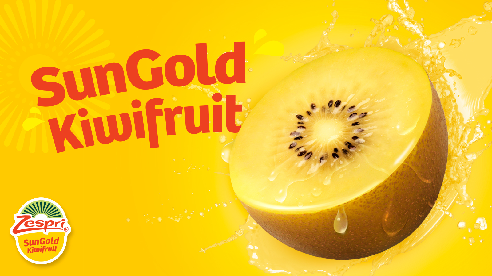
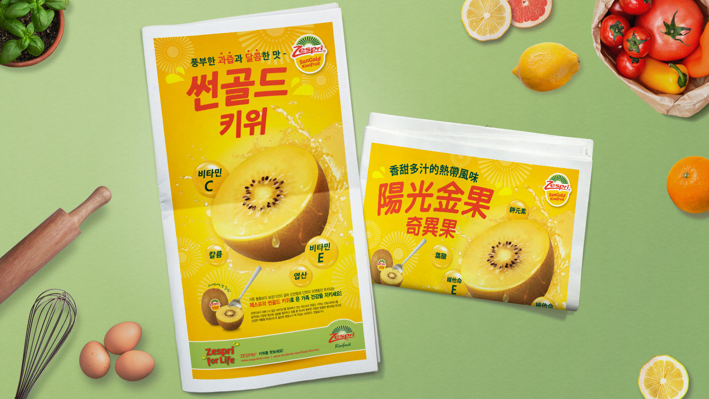
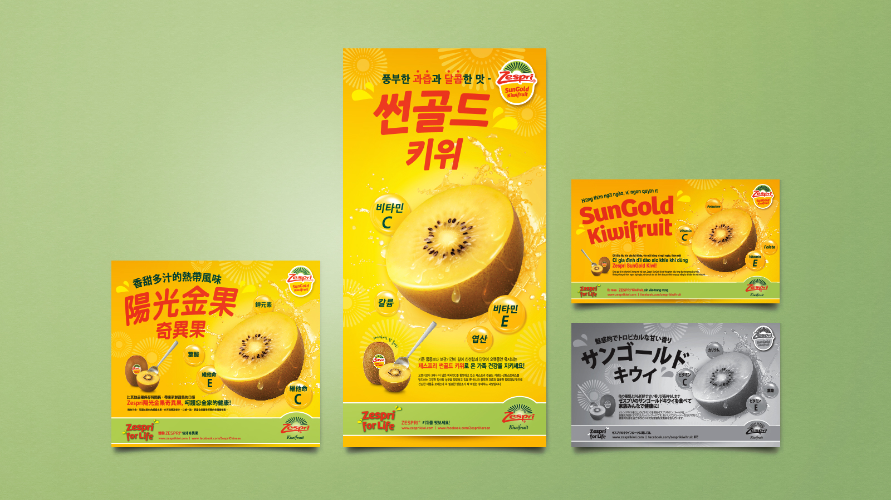
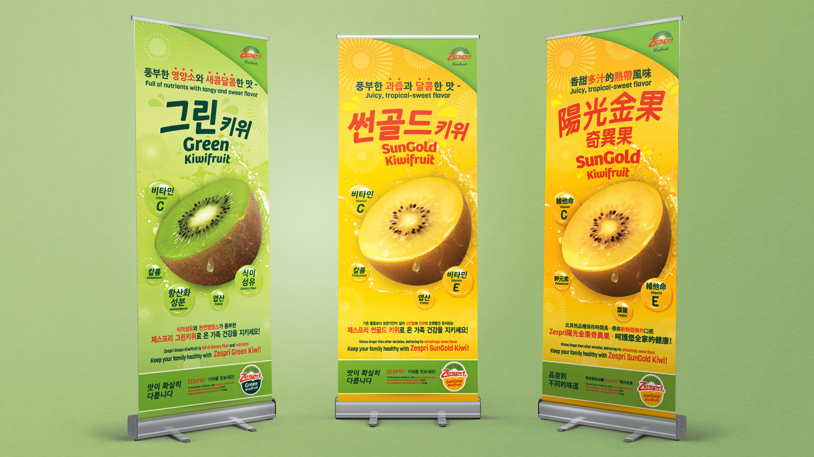
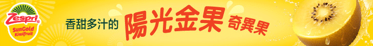
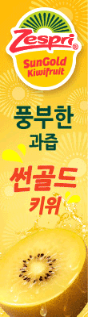
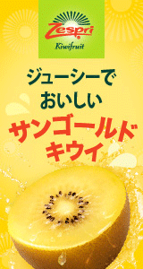

Taste the Difference!
Zespri Product Campaign

About Client
Zespri is the world’s largest marketer of kiwifruit, owned by 2,500 current and former New Zealand kiwifruit growers. Zespri is selling to more than 54 countries and managing about 30% of the global traded volume. Zespri’s mission is to provide everyone with fresh, juicy, nutritious and delicious Zespri kiwifruit all year round.






Project Description
Zespri's goal is to provide the best quality, fresh and delicious kiwifruits, which are full of healthy nutrients. Zespri products are great source of vitamin C, potassium, folate, etc. The advertisements emphasized easy nutrition fact and its juicy and delicious taste.
The primary target was Asian markets and second was the general market. The ads were conducted in various languages and in the format of newspaper, magazine, standing banner, and web banner.
I executed the various forms of advertisement. The main visual of the advertisement would make the viewer’s mouth water. It was the outcome of time-consuming work to make tasty and juicy looking.
Project Detail
- ▸ Project: Product Campaign
- ▸ Client: Zespri
- ▸ Website: www.zespri.com
- ▸ Medium: Newspaper / Magazine / Standing banner / Web banner
- ▸ Language: Korean & English / Chinese / Japanese / Vietnamese
- ▸ Period: 2015-2016